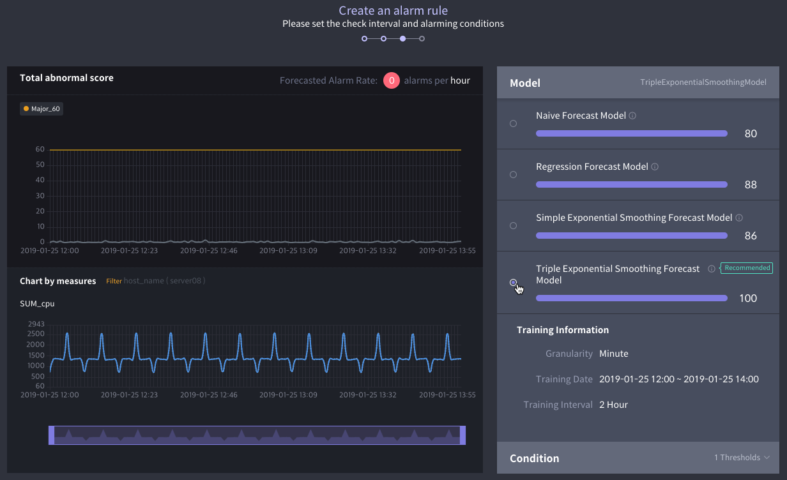
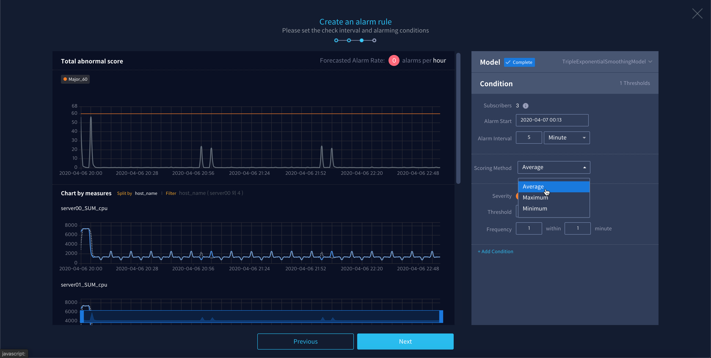
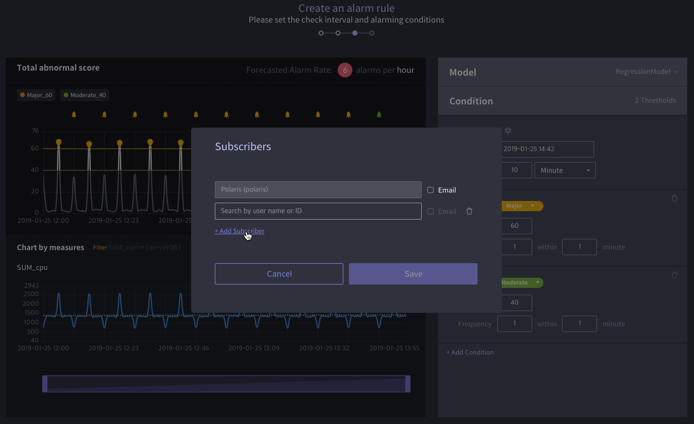

알람 룰 만들기¶
Anomaly는 다음의 절차를 순차적으로 수행하도록 안내하여 사용자가 원하는 알람 룰을 쉽게 생성할 수 있도록 지원해줍니다.
데이터 소스 선정¶
알람 룰을 생성하기 위해서는 가장 먼저 모니터링할 데이터 소스를 선정해야 합니다.
Alarm Rule 우측 상단에 있는 Create Alarm Rule 버튼을 클릭합니다.

모니터링하고자 하는 데이터 소스를 선택합니다.

모니터링할 지표 선택하기¶
데이터 소스를 선택하면 다음 화면으로 넘어가면서 좌측에 Data 패널이 열립니다. 이 패널에서 아래와 같이 모니터링할 지표를 선택할 수 있습니다.
Measure 선택: Measure 영역에서 알람을 설정하고자 하는 측정값 컬럼을 선택합니다. 클릭한 측정값 컬럼은 Aggregate 선반에 자동으로 옮겨집니다.

사용자 컬럼 추가: 필요한 경우 기존 컬럼에 수식을 적용하여 새로운 컬럼을 만들 수도 있습니다. Measure 영역의 우측 상단에서
버튼을 클릭하여 대화 상자를 열고 직접 새로운 컬럼을 만들어 보세요.

Measure 집계 방식 변경: Aggregate 선반에 올려진 각 컬럼을 클릭하여 원하는 집계 방식을 선택합니다. 기본값은 SUM으로 지정되어 있습니다.

Split: 필요할 경우 차원값 컬럼을 기준으로 aggregate 데이터를 분할할 수 있습니다. Dimension 영역에서 분할의 기준으로 삼을 측정값 컬럼에 마우스 커서를 오버한 후
버튼을 클릭하세요. split 가능한 개수는 최대 10개이며, dimension 값이 10개 이상이라면 임의의 값 10개가 선택됩니다.

Dimension 값으로 필터링: 필요할 경우 차원값(Dimension) 컬럼을 기준으로 데이터를 필터링할 수 있습니다. Dimension 영역에서 필터를 설정할 측정값 컬럼에 마우스 커서를 오버한 후
버튼을 클릭하세요. 그 후 아래 화면처럼 모니터링이 필요한 특정 범주를 선택하세요.

트레이닝 기간 설정하기¶
모니터링할 지표 선택을 마쳤으면 Training interval 패널에서 예측 모델 트레이닝에 사용할 데이터 범위를 지정할 수 있습니다.
모델 학습에 사용할 데이터의 기본 시간 단위를 Granularity 메뉴에서 결정할 수 있습니다. 그래프를 보면서 데이터의 패턴을 가장 잘 보여주는 형태의 단위를 선택합니다.

모델 학습에 사용할 데이터의 범위를 설정합니다. 위에 설정한 기본 Granularity보다 같거나 큰 단위로 학습할 데이터 범위를 입력할 수 있습니다.

모든 설정을 마쳤으면 Next를 클릭합니다.
모델 선택하기¶
이제 Model 패널로 넘어가서 어떤 예측 모델을 사용할지 선택합니다. Anomaly는 앞서 설정한 학습 데이터 기간으로 각각의 모델을 트레이닝시킨 후 정확도를 계산합니다. 아래 두 방법 중 하나를 통해 적합한 예측 모델을 선택할 수 있습니다.
추천 모델 사용: 기본적으로 우측에 표시되는 정확도 점수(100점 만점)가 가장 높은 모델이 Recommend 태그와 함께 자동 선택됩니다.
비교 후 직접 선택: 각 모델을 선택하면 예측값과 Abnormal Score를 그래프에서 볼 수 있습니다. 가장 적합하다고 생각되는 모델을 직접 선택할 수 있습니다. 모델명 우측 아이콘에 마우스를 오버하면 해당 모델이 학습된 상세 값을 볼 수 있습니다.

알람 룰 조건 설정하기¶
사용할 예측 모델을 선택하였으면, Condition 패널에서 알람이 발생하는 조건을 설정할 수 있습니다.
Subscribers 항목의 우측에 있는
버튼을 클릭하여 대화 상자를 연 후, 알람 발생 시 통보 받는 대상과 통보 방식을 설정합니다.

아래 각 항목의 설명을 참고하여 알람 발생 조건을 설정합니다.

Alarm Start: 알람 조건 검사를 시작할 순간을 설정합니다. 이 설정값에 해당하는 시간 이후부터 알람 발생을 검사합니다.
Alarm Interval: 알람 발생 조건을 검사하는 주기를 설정합니다.
Scoring Method는 여러 개의 측정값(Measure)에서 Abnormal Score를 계산하는 방식을 결정합니다. 기본값은 각 측정값에서 계산된 Abnormal Score들의 평균값(Average)으로 계산하며, 최대값(Maximum) 또는 최소값(Minimum)으로 변경할 수 있습니다.
아래 각 항목의 설명을 참고하여 모니터링 대상 데이터의 abnormal score에 따른 알람 발동 조건을 설정합니다. 기본적으로 하나의 조건이 주어지며, + Add Condition 버튼을 클릭하면 조건을 추가할 수 있습니다.

Severity: 주어진 조건에 해당하는 알람의 심각도를 설정합니다.
Threshold: Abnormal Score가 이 설정값을 초과하면 데이터 이상 상태로 간주됩니다.
Frequency: Abnormal Score가 한계값을 초과하는 빈도가 어떠할 때 알람을 발생시킬지 결정합니다. 예를 들어, 《3 within 5 minute》로 설정한 경우에는 abnormal score가 5분 안에 3회 이상 한계값을 초과하면 알람이 발생합니다.
모든 설정을 마쳤으면 Next를 클릭합니다.
알람 룰 완성하기¶
알람 룰 설정이 끝났으면 아래와 같이 알람 룰 만들기 절차를 마무리합니다.
알람 룰의 이름과 설명을 기입한 후 Done 버튼을 클릭합니다.

생성된 알람 룰은 알람 룰 리스트의 최상단에 노출되며 실행 중인 상태(Running)로 나타납니다.